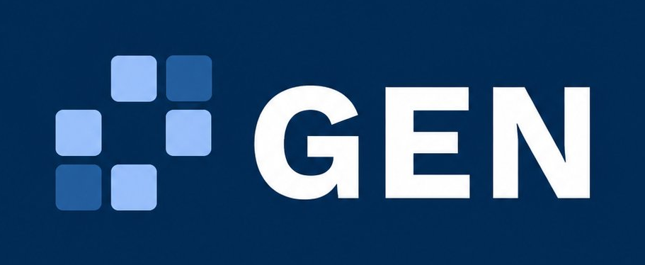

Te ayudamos a que tu centro de salud sea más eficiente.
En GEN Salud digitalizamos y automatizamos la gestión administrativa de centros médicos y te damos herramientas para que verifiques cada número rápidamente.
Agendá una reuniónLo que suele estar costándole tiempo y dinero a tu centro.
Débitos sin recuperar
Cada mes, una parte de lo que tu centro factura a las obras sociales vuelve debitada. Reclamar esos débitos uno por uno lleva horas que el equipo no tiene, y los plazos para hacerlo vencen. Así, dinero que era recuperable termina perdiéndose.
Información desordenada
Sin una base de datos ordenada y fácil de consultar, es difícil ver con claridad el estado del centro y hacer proyecciones que te permitan anticiparte y planificar el negocio.
Cuatro frentes para optimizar la gestión administrativa de tu centro.
Recupero de débitos
Analizamos los débitos de tu centro y te ayudamos a armar el reclamo, agilizando la preparación de la documentación.
Tableros e indicadores
Visualizás facturación, débitos y tiempos de cobro de un vistazo, para tomar decisiones con datos y no a ciegas.
Facturación digital
Pasamos tu circuito de papel a digital, según los sistemas y las obras sociales con las que ya trabajás.
Automatización de tareas
Validaciones de afiliados, recordatorios y controles que dejan de realizarse manualmente para pasar a ejecutarse de forma automática.

Conocemos tu negocio desde adentro.
GEN Salud nace de adentro del sector. Detrás hay años de experiencia trabajando en la gestión de equipos en el área de salud y en facturación a obras sociales: entendemos los débitos, el recupero y los sistemas administrativos que tu centro usa todos los días. Por eso, cuando trabajamos con vos, no perdemos tiempo entendiendo el rubro: ya lo conocemos.
Un camino corto, con resultados que se miden.
Análisis
Miramos tus últimas liquidaciones y tu circuito completo, y te mostramos con números cuánto se debitó, cuánto es recuperable y qué se puede optimizar.
Propuesta
Definimos juntos qué problema afrontar primero, según dónde esté la falencia más grave.
Implementación
Trabajamos sobre un contrato breve, con cambios concretos y resultados evidentes.
¿Querés saber cuánto podemos lograr juntos?
Agendemos una cita y te contamos más sobre nuestros servicios. Sin compromiso.
Escribinos